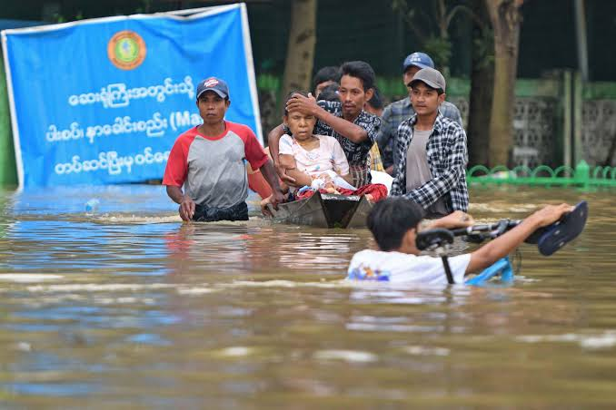

Why rivers rise and what makes floods worse for riverside households.
Floods are caused by a mix of nature and human actions. In river towns like Taungoo, the biggest risk comes when a lot of water arrives faster than the river, drains and soil can handle.
Understanding the causes helps us know when to be careful and what we can change.

Things we cannot control, but can prepare for.
Days of strong rain fill rivers and streams, especially during the rainy season.
When the river is full, water spills over its banks onto nearby homes and farmland.
Strong storms bring intense rainfall in a short time and can cause sudden flooding.
When soil is already full of water, extra rain cannot soak in and runs off quickly.
Actions that make floods worse, and that we can change.
Fewer trees means less protection for soil and faster runoff into rivers.
Rubbish in drains and ditches stops water from flowing away.
Weak or damaged banks collapse and make overflow more likely.
Homes built very close to the river face a higher risk each rainy season.
Watch for these signals during the rainy season.
Knowing the cause is step one. Next, get your household ready.
Go to Preparedness